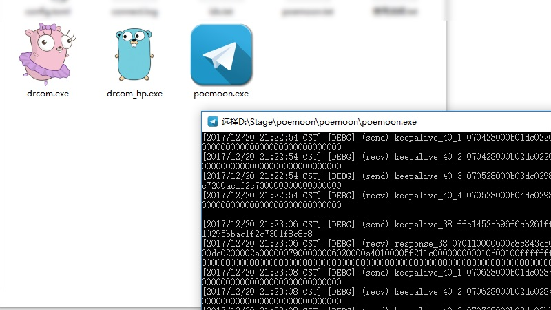

ms2008
lua-resty-pyf
2017.06
Lua 汉字拼音首字母提取。基于 LuaJIT FFI 实现，可以用于汉字拼音排序、检索
Lua
FFI
Github
poemoon
2016.07

一个跨平台的第三方 DRCOM 客户端
Go
Dr
Github
lor (Collaborator)
2016.06
一个基于 OpenResty 的 MVC 框架
Features : Express, Easy, High-Performance
Author : sumory
Lua
Link